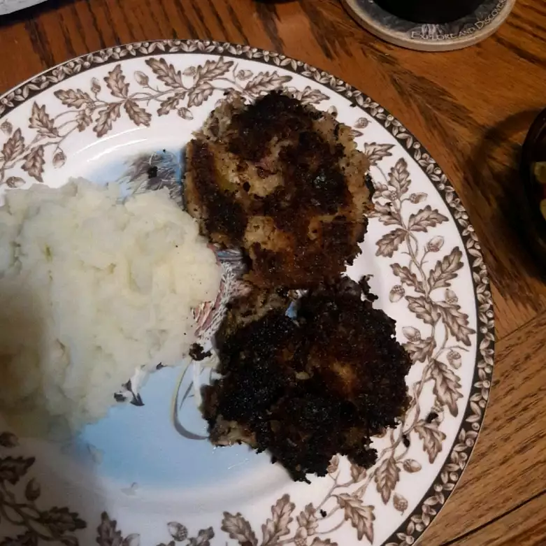

Lasagna

Description:
Easter ham turns into a perfect combo of pancakes and croquettes for a nice way to use up some of the leftovers. Serve
with a honey mustard sauce or any variety of chutneys. Applesauce is also a nice accompaniment.
Ingredients:
- 1 cup finely chopped cooked ham
- 1 ½ cups cold mashed potatoes
- 3 green onions, finely chopped
- 1 egg
- 1 tablespoon Dijon mustard
- ½ teaspoon dried dill weed
- ½ teaspoon salt
- ½ teaspoon ground black pepper
- 1 ½ cups panko bread crumbs, divided
- ½ cup vegetable oil for frying, or as needed
Steps:
-
Mix ham, mashed potatoes, green onions, egg, Dijon mustard, dill weed, salt, black pepper, and 1/4 cup panko bread
crumbs together in a bowl until thoroughly combined. If mixture is too moist to hold together, mix in an additional 1/4
cup of crumbs.
-
Place remaining panko crumbs into a shallow bowl.
-
Scoop about 1/3 cup of the mixture and form into a ball; slightly flatten into a patty. Press both sides of patty into
the panko crumbs; tap off any loose crumbs. Repeat with remaining mixture.
-
Heat vegetable oil in a skillet over medium heat until very hot; pan-fry 2 or 3 patties at a time in the hot oil until
golden brown on each side, 3 to 4 minutes per side.